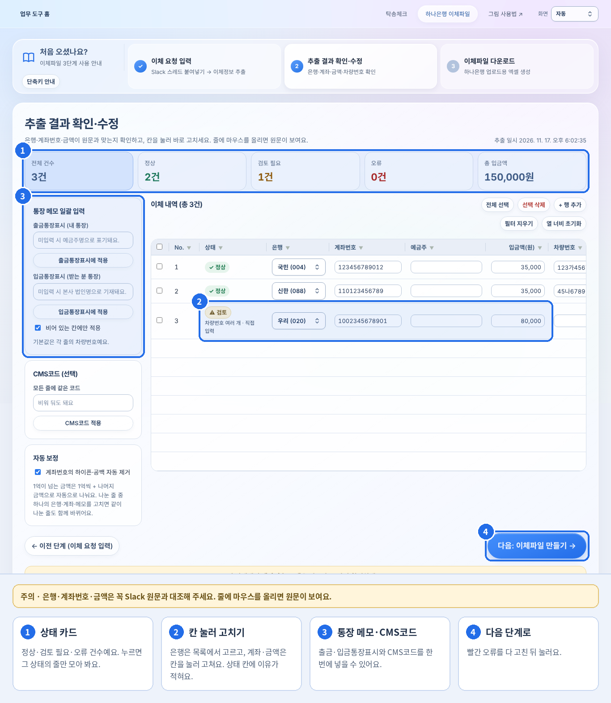

1. 빠르게 시작하기
한 화면에서 위쪽 단계 버튼을 따라 ① 이체 요청 입력 → ② 추출 결과 확인·수정 → ③ 이체파일 다운로드 순서로 진행해요.
- Slack 이체 요청 스레드를 복사해 입력칸에 붙여넣어요.
- 이체정보 추출하기를 누르면 2단계로 넘어가요.
- 표의 은행·계좌번호·금액·차량번호를 원문과 대조하고, 빨간 칸(오류)을 고쳐요.
- 다음: 이체파일 만들기를 누르고, 미리보기를 확인한 뒤 하나은행 이체파일 다운로드를 눌러요.
- 은행 기업뱅킹 [다계좌이체] 메뉴에서 받은 파일을 올려요.
이체파일을 만드는 건 실제 송금이 아니에요. 계좌와 받는 분이 맞는지는 은행 화면에서 한 번 더 확인해 주세요. 입력 내용은 저장되지 않아서 새로고침하거나 창을 닫으면 지워져요.
실제 화면에 설명을 겹쳐 표시한 3단계 안내
가상 이체 요청으로 찍은 실제 화면에 번호·파란 테두리·설명을 덧붙였어요. 그림 위 번호와 아래 설명 카드의 번호가 같아요. 누르면 크게 볼 수 있어요.



2. 스레드 붙여넣기
Slack 스레드를 그대로 붙여넣으면 돼요. 링크·인사말은 알아서 건너뛰어요.
현대 쏘나타 123가4567 국민은행 123-456-789012 35,000원 기아 K5 45나6789 신한은행 110-123-456789 3만5천원
위 계좌번호는 형식을 보여 주기 위한 가상 예시예요.
- 스레드가 여러 개면 + 입력칸 추가로 칸을 나눠 넣으세요. 한 칸에는 5만 자까지 넣을 수 있고, 넘쳐서 잘리면 안내 창이 떠요.
- 이미 추출한 칸은 추출 완료 표시가 붙어요. 다시 눌러도 같은 내용은 두 번 들어가지 않아요.
- 같은 스레드를 다른 칸에 또 붙여넣으면 그 칸은 건너뛰어요.
- 추출한 스레드에 내용을 덧붙여 다시 추출하면 새로 붙인 건만 추가돼요.
차량번호를 못 찾았을 때
추출 후 차량번호가 없는 건이 있으면 팝업이 떠요. 건마다 둘 중 하나를 넣어 주세요.
- 차량번호 입력:
123가4567처럼 넣으면 그 줄의 차량번호가 되고, 비어 있는 출금·입금통장표시에도 들어가요. - 입금통장 이체 메모 입력:
오픈마일_운송비처럼 넣으면 입금통장표시에 들어가요. 출금통장표시가 비어 있으면 같은 문구가 들어가요.
나중에 표에서 입력을 누르면 그대로 두고 2단계 표에서 직접 넣을 수 있어요. 비워 두면 '검토' 상태로 남아요. 한 스레드에 차량번호가 여러 개라 하나로 정할 수 없을 때도 비워 두고 검토로 표시해요.
3. 추출·금액 읽는 기준
이체정보 추출하기 버튼이나 Ctrl+Enter(Mac은 ⌘+Enter)로 추출해요. 은행 줄 다음의 계좌번호 줄, 그 다음의 금액 줄을 한 건으로 묶고, 앞쪽의 차량번호를 붙여요.
- 은행은 약칭도 알아봐요. 예: KB국민 → 국민, NH농협 → 농협, 카뱅 → 카카오뱅크.
- '예금주: 홍길동웰컴저축은행'처럼 예금주 줄에 은행 이름이 섞여도 은행 줄로 보지 않아요. 예금주는 표에 참고용으로만 보여요.
2026-11-17 14:30같은 날짜·시간 줄은 계좌번호로 보지 않아요.
| 입력 | 읽는 금액 |
|---|---|
| 35,000원 / 금액: 35000 / ₩35,000 | 35,000원 |
| 3만5천원 | 35,000원 |
| 1000만원 / 천만원 | 10,000,000원 |
| 1억 2천만원 | 120,000,000원 → 자동 분할 |
| 3.5억 / 35,000.50원 / -35,000원 / 1/2만원 / 35,00원 | 읽지 않고 비워 둬요 → '금액' 오류로 직접 확인 |
| 35000원 / 40000원 (한 줄에 금액 여러 개) | 읽지 않고 비워 둬요 |
잘못 읽으면 엉뚱한 금액이 되는 표기는 일부러 비워 둬요. 원문을 보고 표에서 직접 넣어 주세요. 표에서 고친 금액도 같은 기준으로 확인해요. '300만'처럼 넣으면 3,000,000으로 바뀌어요.
1억 원 초과 금액과 100건 한도
1억 원을 넘는 금액은 1억 원씩 나누고 남은 금액을 마지막 줄로 넣어요. 예: 2억 5천만 원 → 1억 + 1억 + 5천만, 3줄. 나눈 줄에는 분할 1/3 같은 표시가 붙어요.
한 파일에는 나눈 줄을 포함해 100건까지 넣을 수 있어요. 넘으면 추가하지 않고 기존 내역을 그대로 둬요. 나누면 100건을 넘는 큰 금액은 나누지 않고 오류로 표시해요.
4. 확인·수정
표의 칸을 눌러 바로 고칠 수 있어요. 줄에 마우스를 올리면 원문이 보여요. 위쪽 정상·검토 필요·오류 카드를 누르면 그 상태의 줄만 모아 봐요. 열 머리글의 ▼를 누르면 글자로 걸러 볼 수 있고, 머리글 경계를 끌어 열 너비도 바꿀 수 있어요.
| 상태 | 언제 나오나요 | 어떻게 하나요 |
|---|---|---|
| ✕ 오류 | 은행을 고르지 않음 · 계좌번호가 숫자 8~16자리가 아님 · 금액이 없거나 0원 · 숫자가 아닌 금액 · 1억 초과인데 나누지 않음 | 꼭 고쳐야 다운로드할 수 있어요. |
| ⚠ 검토 | 차량번호·메모가 없음 · 차량번호 형식이 다름 · 같은 계좌가 두 줄 이상 · 같은 계좌·같은 금액 중복(두 번 송금 주의) · 휴대폰 번호 모양 계좌 · 1억 이상·분할 송금 | 원문과 대조한 뒤 3단계에서 확인 체크를 하면 받을 수 있어요. |
| ✓ 정상 | 문제가 보이지 않아요. | 그래도 원문과 한 번 더 확인해 주세요. |
- 은행은 드롭다운에서 골라요. 이름 옆에 하나은행 입금은행 코드가 함께 보여요.
- + 행 추가로 한 줄을 직접 넣을 수 있어요.
- 체크박스로 고른 뒤 선택 삭제를 누르면 지워져요. 맨 위 체크박스와 전체 선택은 지금 보이는 줄만 골라요.
- 나눈 줄 중 하나의 은행·계좌·메모를 고치면 같이 나눈 줄도 함께 바뀌어요.
- 표에서 금액을 1억 넘게 고치면 그 자리에서 자동으로 나눠요.
- 걸러 보기와 체크박스는 다운로드 범위와 상관없어요. 다운로드에는 표에 있는 모든 줄이 들어가요.
5. 통장 메모·CMS코드
출금·입금통장표시의 기본값은 각 줄의 차량번호예요. 표 오른쪽 통장 메모 일괄 입력에서 한 번에 바꿀 수 있어요.
- 출금통장표시 (내 통장) 칸에 문구를 넣고 출금통장표시에 적용을 눌러요.
- 입금통장표시 (받는 분 통장)도 같은 방식이에요.
- 비어 있는 칸에만 적용이 켜져 있으면 이미 적힌 칸은 그대로 둬요. 끄면 모든 줄을 바꿔요.
- 줄마다 다르게 쓰려면 표의 칸을 직접 고쳐요.
통장표시를 비워 두면 은행에서 출금통장은 예금주명, 입금통장은 본사 법인명으로 적어요.
CMS코드는 선택 항목이라 비워 둬도 돼요. 넣고 CMS코드 적용을 누르면 모든 줄에 같은 코드가 들어가요.
자동 보정이 켜져 있으면 계좌번호의 하이픈·공백을 자동으로 지워요.
6. Excel 다운로드
- 위쪽 카드에서 총 건수·총 이체금액·검토 결과를 확인해요.
- 미리보기 표가 Excel에 들어가는 그대로예요. 원문과 대조해요.
- 검토 필요 건이 있으면 검토 필요 N건을 원문과 대조해 확인했어요를 체크해요. 체크한 뒤 내역을 바꾸면 체크가 풀려서 다시 확인해야 해요.
- 하나은행 이체파일 다운로드를 눌러요. 연달아 눌러도 한 번만 저장돼요.
| 열 | 항목 |
|---|---|
| A | 입금은행 (하나은행 코드표 이름. 예: 국민, 신한) |
| B | 입금계좌번호 |
| C | 입금액(원) |
| D | 출금통장표시 |
| E | 입금통장표시 |
| F | CMS코드 |
예금주·원문은 파일에 들어가지 않아요. 메모에 섞인 보이지 않는 문자는 지워서 파일이 깨지지 않게 해요.
파일 이름
날짜·시각과 차량번호별 금액이 자동으로 붙어요.
하나은행_다계좌이체_20261117_1430_123가4567_50만원.xlsx 하나은행_다계좌이체_20261117_1430_123가4567_35,000원_45나6789_8만원.xlsx 하나은행_다계좌이체_20261117_1430_123가4567외3대_총850만원.xlsx
차량이 3대까지면 차량마다, 4대 이상이면 첫 번호 외 N대와 총액을 적어요. 만원 단위로 떨어지면 '만원', 아니면 원 단위로 적어요. 차량번호가 없는 금액은 '번호없음'으로 붙어요.
8. 초기화·데이터 보관
- 전체 초기화: 붙여넣은 스레드와 이체 내역을 모두 지워요. 확인 창이 한 번 떠요. 되돌릴 수 없어요.
- 입력 내용은 서버로 보내지 않고 이 브라우저 안에서만 처리해요. 따로 저장하지도 않아서 새로고침하거나 창을 닫으면 지워져요.
- 아직 파일을 받지 않았거나 받은 뒤 내역을 바꿨다면, 새로고침·창 닫기 전에 한 번 물어봐요.
- 열 너비만 이 기기에 기억해요. 열 너비 초기화로 되돌릴 수 있어요.
9. 자주 묻는 질문
추출했는데 금액이 비어 있어요.
한 줄에 금액이 여러 개거나, 소수·음수·분수처럼 잘못 읽을 수 있는 표기일 수 있어요. 줄에 마우스를 올려 원문을 보고 표에서 직접 넣어 주세요.
다운로드 버튼이 눌리지 않아요.
오류 줄이 남아 있거나, 검토 필요 건의 확인 체크를 하지 않았을 수 있어요. 2단계에서 오류 카드를 눌러 오류 줄만 보고 고친 뒤, 3단계에서 확인 체크를 해 주세요.
'두 번 송금 주의'가 떠요.
같은 은행·계좌·금액이 두 줄 이상 있어요. 같은 요청을 두 번 넣은 건 아닌지 원문을 확인하고, 중복이면 한 줄을 지워 주세요. 실제로 같은 금액을 두 번 보내는 경우라면 그대로 두고 확인 체크를 하면 돼요.
차량번호가 없으면 받을 수 없나요?
받을 수 있어요. 차량번호·메모가 없으면 '검토'로 표시될 뿐이에요. 3단계에서 확인 체크를 하면 받을 수 있어요.
100건을 넘었어요.
1억 넘어 나눈 줄도 건수에 들어가요. 필요 없는 줄을 지우거나, 나눠서 두 파일로 만들어 주세요.
다운로드했는데 표가 남아 있어요.
정상이에요. 저장이 안 됐을 때 내용이 사라지지 않도록 남겨 둬요. 파일이 저장된 걸 확인한 뒤 전체 초기화를 눌러 주세요.
7. 송금 코멘트 복사
3단계 다운로드 버튼 아래 송금 코멘트에 Slack에 남길 문구가 만들어져요. 줄마다 복사하거나 코멘트 전체 복사로 한 번에 복사해요.
금액 100만원 국민 123… 계좌정보로, 금액 50만원 신한 110… 계좌정보로 송금완료 (총 150만원)차대금 1,000만원 딜러에게 송금완료처럼 적어요.(압류 계좌)처럼 괄호만 있는 줄이 있으면금액 500만원 압류 계좌로 송금완료처럼 그 문구를 써요.